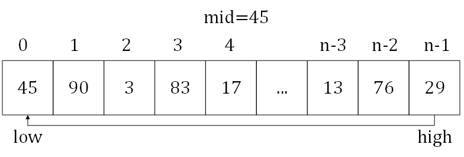
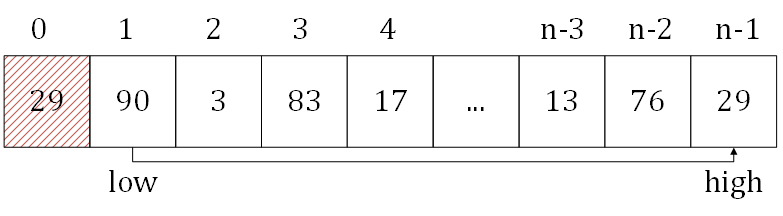
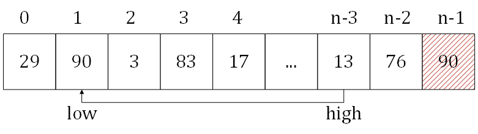

Upper Folder - 上一级目录
Source Code - 源码
Test Code - 测试
Quick Sort
快速排序
问题：
用快速排序对长度为\(n\)的无序序列\(s\)进行排序。
解法：
本问题对无序序列\(s\)进行升序排序，排序后\(s\)是从小到大的。
将长度为\(n\)的序列\(s\)，选取最左边的值作为\(mid\)，将剩余部分分为\(left\)和\(right\)两个部分，\(left\)和\(right\)是无序的，且\(left\)中的所有元素\(\forall x \le mid\)（其中\(x \epsilon left\)），\(right\)中的所有元素\(\forall y \le mid\)（其中\(y \epsilon right\)）。
初始时\(left\)和\(right\)两个部分都是空的，分别从数组\(s\)的左右两边向中间推进。例如下图中的数组：

初始时设置\(mid = s[0] = 45\)，\(low = 0\)，\(high = n-1\)。从\(high\)开始，向左搜索到第一个元素\(s[high] \lt mid\)（\(high = n-1\)），该元素不符合\(right\)的性质，因此将\(s[high]\)移动到\(s[low]\)（\(s[low] = s[high]\)）。

再从\(low\)开始，向右搜索到第一个元素\(s[low] \gt mid\)（\(low = 1\)），该元素不符合\(left\)的性质，因此将\(s[low]\)移动到\(s[high]\)（\(s[high] = s[low]\)）。

重复上面的操作，直到\(low = high\)，这时的\(low\)和\(high\)的位置即为\(left\)和\(right\)的中间位置，将\(mid\)移动到该位置（\(s[low] = mid\)），就完成了一轮排序。\(left\)和\(right\)内部仍然是无序的，把它们也当作一个数组，递归的进行排序即可。
对于长度\(n\)的序列\(s\)，每一轮放置所需要的时间为\(O(n)\)，总共需要\(log_{2} n\)轮，该算法的时间复杂度为\(O(n \cdot log_{2}n)\)。